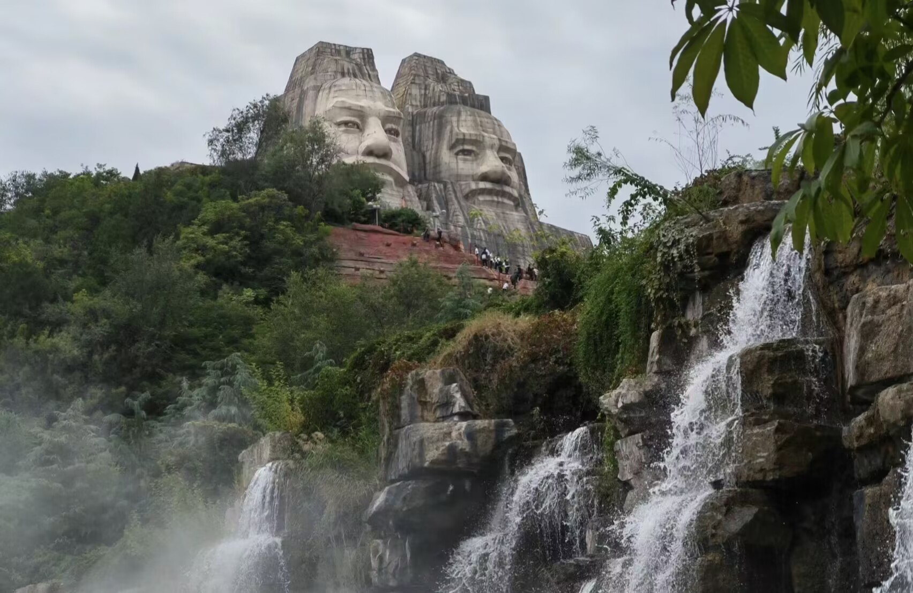

首页
历史文化
景区
5A级景区
4A级景区
文博科教
线路
四大古都焕新之旅
老家河南寻根之旅
华夏文明探源之旅
中原民俗风情之旅
美食
地道小吃
开胃佳肴
绝味面食
可口鲜汤
旅游资讯
联系我们
注册
登录
4A级景区
南召宝天曼，国家AAAA级景区，南阳伏牛山世界地质公园核心部分、世界生物圈保护区之一、国家级自然保护区，南召宝天曼位于河南省南阳市南召县，地处伏牛山腹地，总面积86.4平方公里，主峰海拔1830米。古老繁茂的原始森林及丰富独特的野生动植物资源，在同纬度居全国之首位，被中外专家誉为“天然物种基因库 ”，“中州绿色明珠”是集旅游观光、疗养度假和科普研究为一体的游览景区。
宝天曼度假区
伏羲大峡谷位于河南省郑州新密市西北20公里的伏羲山旅游区内，是国家AAAA级旅游景区，是一条以典型红岩嶂谷群地质地貌景观为主的峡谷景区，伏羲山属于嵩山山脉向东延伸部分，主峰五指岭1108.5米，横跨伏羲山全境。景区气候温润，四季分明。景区植被茂密、物种繁多、绿树掩映、花木扶疏，有千年以上的古树名木数十棵，其中具有“活植物化石”之称的古亢树，是伏羲山特有的树种。景区终年流水不断，谷底飞瀑、跌水、深潭、平湖，清幽凉爽，姿态万千，风景秀美。峡谷两岸岩石兀立，岩壁上天然石梯悬于空中，形形色色的人物以及动物的形象惟妙惟肖
伏羲大峡谷

黄河风景名胜区，位于河南省省会郑州市西北20千米处黄河之滨，南依岳山，北临黄河，历经四十年的开发建设，现已开放面积20多平方千米，形成了融观光旅游、休闲度假、科普教育、寻根祭祖、弘扬华夏文明为一体的大型风景名胜区。区内已经建成并对外开放的有五龙峰、岳山寺、骆驼岭、炎黄二帝、星海湖等五大景区四十多个景点。2002年，郑州黄河风景名胜区被授为第二批国家AAAA级旅游景区、2009年12月31日，郑州黄河风景名胜区被国务院公布为第七批国家级风景名胜区
黄河风景名胜区